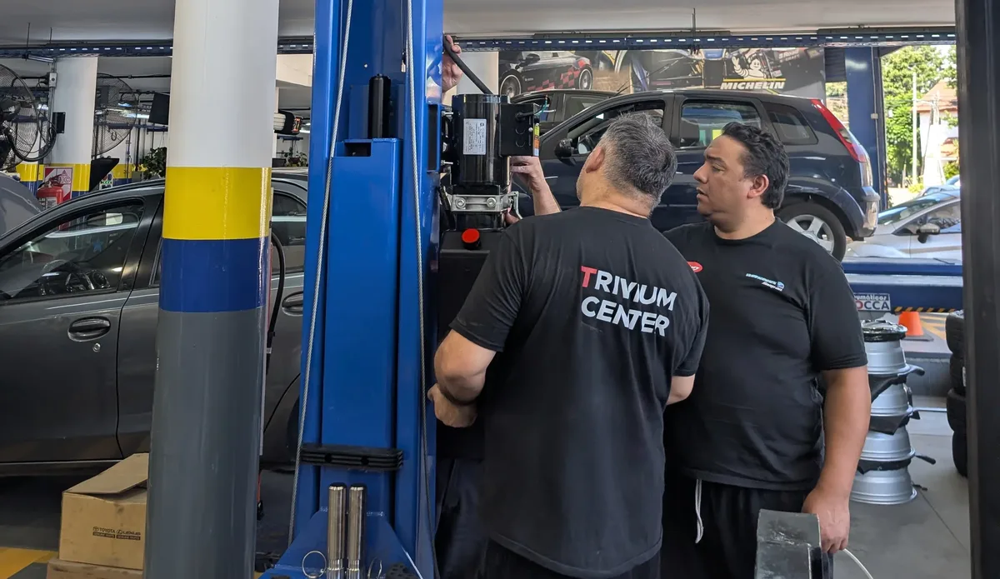
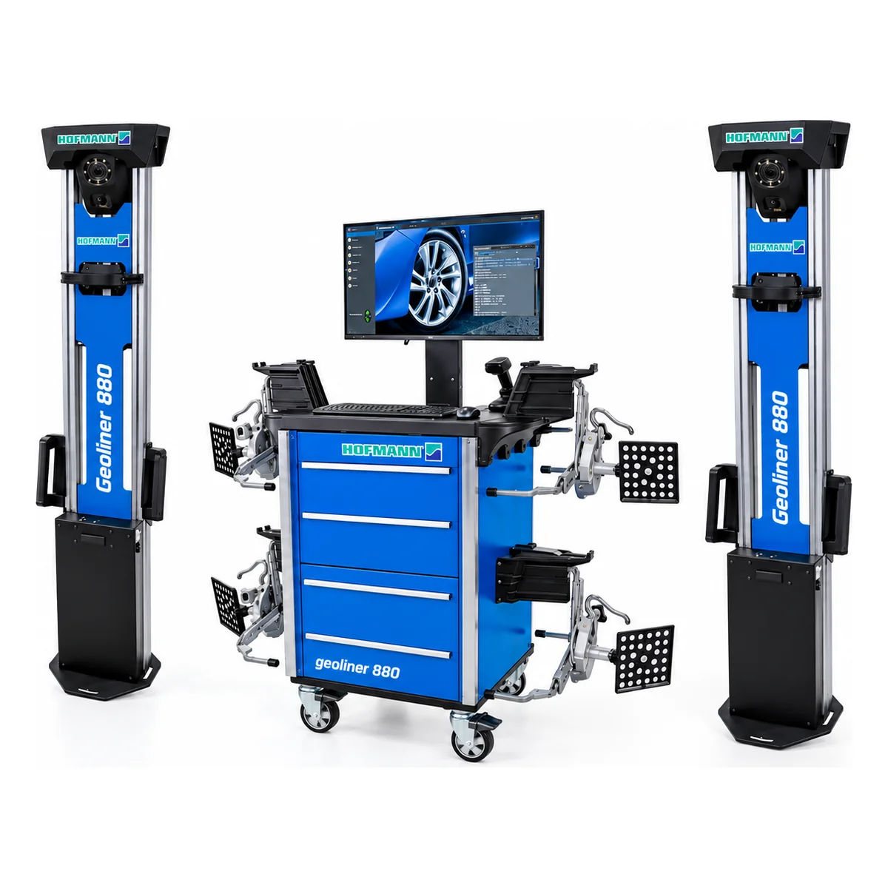
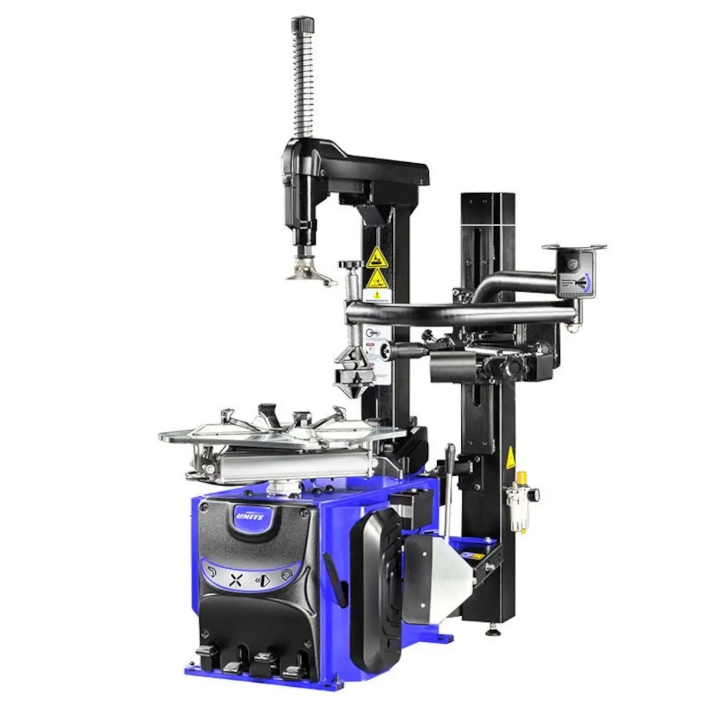
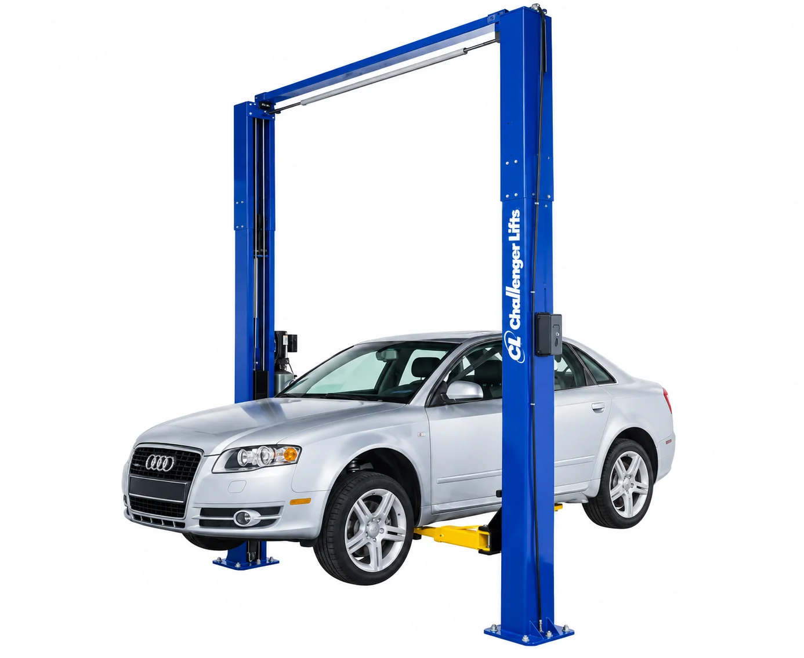
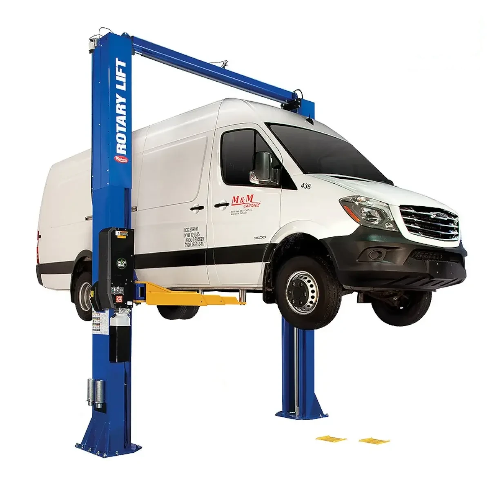
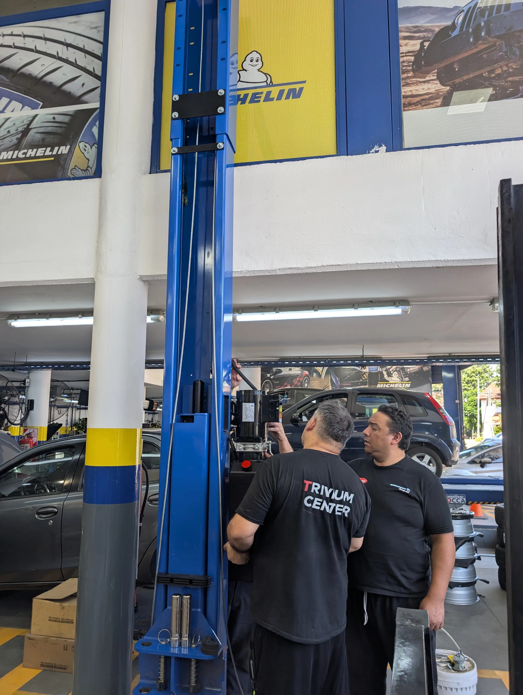

Máquinas de taller, con técnicos que las instalan.
Elevadores, alineadoras, balanceadoras y desarmadoras. Te ayudamos a elegir según tus medidas y tu volumen de trabajo, y damos servicio técnico en todo el país.
¿Nos conocías como Trivium Center? Somos el mismo equipo.

15+ años
trayectoria
en equipamiento para talleres.1 año
garantía oficial
sobre los equipos.Todo el país
instalación
con equipo técnico. Se cotiza aparte.48 a 72 h
posventa
en servicio de posventa.¿Qué trabajo hace tu taller?
Empezá por la tarea. Dentro de cada familia vas a encontrar marcas importadas de mayor calibre y nuestra línea Trivium Pro.

Elevadores
De 2 y 4 columnas, tijera y motos. Se eligen por capacidad, techo y tipo de trabajo.
34 en catálogo
Alineación
Alineadoras 3D para autos y alineación de camiones por cámara.
6 equipos
Balanceo
Balanceadoras para auto y camión, más conos y accesorios de centrado.
9 balanceadoras
Desarmado
Desarmadoras para gomería, con o sin brazo auxiliar para run flat.
8 desarmadorasElevadores de 2 columnas, lado a lado
Los mismos datos, en las mismas unidades. Filtrá por lo que vas a levantar.
| Modelo | Capacidad (escala 0 a 8.000 kg) | Elevación | Origen | ALI | Precio, IVA incl. |
|---|---|---|---|---|---|
| Unite PL 4.0 2ATrivium Pro |
4.000 kg | 1850 mm | Marcado CE | — | $ 4.627.188 |
 Unite PL 4.0 2DTrivium Pro Unite PL 4.0 2DTrivium Pro |
4.000 kg | 1900 mm | Marcado CE | — | $ 3.798.438 |
 Direct Lift DL9 by Rotary LiftDirect Lift Direct Lift DL9 by Rotary LiftDirect Lift |
4.082 kg | 1930 mm | EE. UU. | — | A cotizar |
 Rotary Lift SPOA10Rotary Lift Rotary Lift SPOA10Rotary Lift |
4.535 kg | 1962 mm | EE. UU. | Certificado | A cotizar |
 Challenger Lifts VLE10Challenger Lifts |
4.536 kg | 1899 mm | — | Certificado | A cotizar |
 Trivium Pro U-T50MSDTrivium Pro Trivium Pro U-T50MSDTrivium Pro |
5.000 kg | 1910 mm | Marcado CE | — | $ 11.556.401 |
 Forward Lift F12 by Rotary LiftForward Lift Forward Lift F12 by Rotary LiftForward Lift |
5.443 kg | Consultar | — | Certificado | A cotizar |
 Elevador Dos Columnas 5500 kg Rotary Lift SPO55Rotary Lift Elevador Dos Columnas 5500 kg Rotary Lift SPO55Rotary Lift |
5.500 kg | 3486 mm | EE. UU. | — | A cotizar |
 Trivium Pro PL-6.0-2DEBTrivium Pro Trivium Pro PL-6.0-2DEBTrivium Pro |
6.000 kg | 1945 mm | Marcado CE | — | $ 11.995.984 |
 Elevador Dos Columnas 6500 kg Rotary Lift SPO65Rotary Lift Elevador Dos Columnas 6500 kg Rotary Lift SPO65Rotary Lift |
6.500 kg | 2000 mm | EE. UU. | — | A cotizar |
 Rotary Lift SPO16 CargoRotary Lift |
7.257 kg | Consultar | EE. UU. | Certificado | A cotizar |
Antes de elegir, medí.
Un elevador se compra una vez y se usa durante años. Lo primero es saber si entra.

Cargá las medidas libres de tu taller, en milímetros
- Techo necesario: 3655 mm
- Ancho total del equipo (C): 3469 mm
Es una primera comprobación. No reemplaza el relevamiento: el piso, la alimentación eléctrica y el espacio de circulación se revisan antes de instalar.
Mandar mis medidas a un técnicoMarcas, y para qué sirve cada una
El origen de fabricación se informa por modelo en cada ficha, porque no siempre coincide con el país de la marca.
La venta es una parte del trabajo
Así acompañamos un equipo, desde la primera consulta.

Medidas y uso
Qué vehículos entran, cuánto pesan, cuánta altura y qué alimentación hay.
Cotización completa
Equipo, envío e instalación detallados por separado.
Instalación y capacitación
Las coordina nuestro equipo técnico según la localidad. Se cotizan aparte.
Posventa y repuestos
Servicio técnico y repuestos originales.
Empresas que confían en nosotros
Y tu taller
Biblioteca técnica
Guías de compra para decidir y notas de taller para trabajar mejor.